대기환경산업기사 (2012-05-20 기출문제)
1과목: 대기오염개론
1. 연소과정에서 방출되는 NOx 배출가스 중 NO : NO2 의 개략적인 비는 얼마 정도인가?
- 5 : 95
- 20 : 80
- 50 : 50
- 90 : 10
(정답률: 98%)

2. 가시도(Visibility)에 관한 설명으로 옳지 않은 것은?
- 빛의 흡수와 분산으로 가시도가 감소한다.
- 가시거리는 습도에 의하여 크게 영향을 받는다.
- COH(coefficient of haze)는 깨끗한 여과지에 분진을 모은 다음 빛전달율의 감소를 측정함으로써 결정된다.
- 강도가 l인 빛으로 X거리에서 조명하여 dx 거리를 통과하는 동안 흡수와 분산으로 빛의 강도가 dl만큼 감소할 때 dl = σ(l)2/(dx)2이다. ( σ : 소광계수)
(정답률: 87%)
3. 다음 특정물질 중 오존파괴지수가 가장 낮은 것은?
- CFC-115
- 사염화탄소
- Halon-2402
- Halon-1301
(정답률: 84%)
4. 다음 중 온실가스 감축 중, 오존층 보호를 위한 국제협약(의정서) 등으로 가장 거리가 먼 것은?
- 바젤협약
- 교토의정서
- 몬트리올 의정서
- 비엔나 협약
(정답률: 74%)
5. 다음 설명하는 오염물질로 가장 적합한 것은?
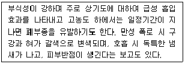
- arcyl amides
- NO2
- Br2
- MEK
(정답률: 87%)
6. B-C유 보일러 배출가스 중 SO2 농도가 표준상태에서 1120ppm으로 측정되었다면 같은 조건에서는 몇 mg/Sm3인가?
- 392
- 689
- 3200
- 3870
(정답률: 82%)
7. 다음 중 일반적으로 하루 중에서 최고 농도를 나타내는 시간이 가장 빠른 것은?
- NO
- NO2
- O3
- HNO3
(정답률: 86%)
8. 대기권의 구조에 관한 설명으로 가장 거리가 먼 것은?
- 대기의 수직온도 분포에 따라 대류권, 성층권, 중간권, 열권으로 구분할 수 있다.
- 대류권 기상요소의 수평분포는 위도, 해륙분포 등에 의해 다르지만 연직방향에 따른 변화는 더욱 크다.
- 대류권의 높이는 통상적으로 여름철에 낮고 겨울철에 높으며, 고위도 지방이 저위도 지방에 비해 높다.
- 대류권의 하부 1∼2km 까지를 대기경계층이라고 하며, 지표면의 영향을 직접 받아서 기상요소의 일변화가 일어나는 층이다.
(정답률: 91%)
9. 다음 대기오염의 역사적 사건에 대한 주오염물질의 연결로 옳은 것은?
- 보팔시 사건 : SO2, H2SO4-mist
- 포자리카 사건 : H2S
- 체르노빌 사건 : PCBs
- 뮤즈계곡사건 : methylisocynate
(정답률: 94%)
10. 다음 설명과 관련된 복사법칙으로 가장 적합한 것은?
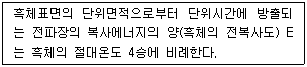
- 플랑크의 법칙
- 빈의 법칙
- 스테판-볼쯔만의 법칙
- 알베도의 법칙
(정답률: 89%)
11. 다음 중 실내공기오염의 일반적인 지표가 되는 오염물질로서 다중이용시설에서 실내공기질 유지기준이 1000ppm 이하인 것은?
- N2
- CO
- CO2
- H2S
(정답률: 92%)
12. 다음 오염물질의 재료와 구조물에 대한 영향 중 특히 타이어와 같은 고무제품에 접촉하면 균열 및 노화를 일으키며, 착색된 각종 섬유를 탈색시키는 것으로 가장 적합한 것은?
- 불화수소
- 아황산가스
- 일산화탄소
- 오존
(정답률: 89%)
13. 다음 대기분산모델 중 미국에서 개발되었으며, 적용 배출원의 형태는 점, 면이며, 도시지역에서 광화학반응을 고려하여 오염물질의 이동을 계산하는 광화학모델에 해당하는 것은?
- ADMS
- RAMS
- UAM
- TCM
(정답률: 72%)
14. 다음의 대기오염물질 중 2차 오염물질과 가장 거리가 먼 것은?
- N2O3
- PAN
- O3
- NOCl
(정답률: 85%)
15. 다음 중 레일라이 산란(Rayleigh scattering)효과가 가장 뚜렷이 나타나는 조건은?
- 입자의 반경이 입사광선의 파장보다 훨씬 큰 경우
- 입자의 반경이 입사광선의 파장보다 훨씬 작은 경우
- 입자의 반경과 입사광선의 파장이 비슷한 크기인 경우
- 입자의 반경과 입사광선 파장의 크기가 정확히 일치하는 경우
(정답률: 87%)
16. 유효높이 60m인 굴뚝으로부터 SO2가 160g/s의 질량속도로 배출되고 있다. 굴뚝높이에서의 풍속은 6m/s, 풍하거리 500m에서 대기안정 조건에 따른 편차 σy는 28m, σz는 18.5m이었다. 가우시안모델에서 지표반사를 고려할 때, 이 굴뚝으로부터 풍하거리 500m의 중심선상의 지표농도는?
- 약 34μg/m3
- 약 66μg/m3
- 약 85μg/m3
- 약 101μg/m3
(정답률: 64%)
17. 지상 10m에서의 풍속이 5m/s라면 지상 50m 에서의 풍속은? (단, Deacon식 적용, 대기는 심한 역전상태(P=0.4)임)
- 8.5 m/s
- 9.5 m/s
- 10.5 m/s
- 11.5 m/s
(정답률: 85%)
18. London형 스모그 사건과 비교한 Los Angeles형 스모그 사건에 관한 설명으로 옳은 것은?
- 주오염물질은 SO2, smoke, H2SO4, 미스트 등이다.
- 주오염원은 공장, 가정난방이다.
- 침강성 역전이다.
- 주로 아침, 저녁에 발생하고, 환원반응이다.
(정답률: 90%)
19. 대기오염물질이 인체에 미치는 영향에 관한 설명으로 가장 적합한 것은?
- 석면, 니켈, 크롬, 비소화합물은 인체의 영향을 미치는 형태로 분류할 때 발열물질에 해당한다.
- 황화수소는 고농도에서 주로 다발성 신경염, 이따이이따이병 등을 일으킨다.
- 오존에 반복 노출되면 가슴 통증, 기관지염, 심장질환, 천식 등을 일으킨다.
- 일산화탄소는 피부조직에 수분이 존재하면 산으로 작용하며, 100ppm에 10분 정도의 노출도 인체에 격렬한 두통을 유발한다.
(정답률: 69%)
20. 다음 중 교외지역에 비해 온도가 높게 나타나는 도시열섬효과(heat island effect)를 가져오는 원인과 가장 거리가 먼 것은?
- 기온역전
- 건물 등 구조물에 의한 거칠기 길이의 변화
- 지표면의 열적 성질 차이
- 인구 집중에 따른 인공열 발생의 증가
(정답률: 77%)
2과목: 대기오염 공정시험 기준(방법)
21. 흡광광도법(Absorptiometric Analysis)에 관한 설명으로 옳은 것은?
- 흡광광도 분석장치는 광원부, 시료원자회부, 단색화부 등으로 구성되어 있다.
- 광원부에서 자외부 광원으로는 주로 중수소 방전관을 사용한다.
- 흡광도는 눈금의 보정에 사용되는 것은 과망간산칼륨용액이다.
- 광전광도계는 단색화부의 필터를 사용한 장치로 복광속형이 많고 구조가 복잡하다.
(정답률: 53%)
22. 0.2N-H2SO4 용액 500mL를 만들기 위해서 95% H2SO4(비중-1.84) 약 몇 mL를 취하여야 하는가?
- 약 2.8
- 약 4.8
- 약 6.0
- 약 8.0
(정답률: 50%)
23. 다음 중 원자흡광광도법(Atomic Absorption Spectrophotometry)에서 사용되는 용어와 가장 거리가 먼 것은?
- 중공음극램프(Hollow Cathode Lamp)
- 제로가스(Zero Gas)
- 멀티패스(Multi-path)
- 공명선(Resonance Line)
(정답률: 81%)
24. 굴뚝 배출가스 중 먼지측정을 위해 시료채취 시 등속흡인 정도를 보기 위한 등속계수의 범위로 가장 적합한 것은?
- 85∼1⑤%
- 90∼110%
- 95∼115%
- 95∼110%
(정답률: 78%)
25. 다음 조건을 이용한 가스크로마토그래프법에서 분리관의 HETP는?
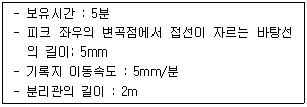
- 0.125cm
- 0.25cm
- 0.5cm
- 0.65cm
(정답률: 54%)
26. 다음 각 장치 중 이온크로마토그래프법의 주요 장치 구성과 거리가 먼 것은?
- 용리액조
- 송액펌프
- 써프렛서
- 회전섹터
(정답률: 85%)
27. 다음 중 환경대기 내의 탄화수소 농도를 측정하기 위한 시험방법으로 옳지 않은 것은?
- 용융 탄화수소 측정법
- 활성 탄화수소 측정법
- 비메탄 탄화수소 측정법
- 총탄화수소 측정법
(정답률: 75%)
28. 화학분석시 온도의 표시에 관한 설명으로 옳지 않은 것은?
- 냉수는 15℃ 이하이다.
- 온수는 60∼70℃, 열수는 약 100℃를 말한다.
- 찬 곳은 따로 규정이 없는 한 4℃ 이하를 뜻한다.
- 냉후(식힌후)라 표시되어 있을 때는 보온 또는 가열 후 실온까지 냉각된 상태를 뜻한다.
(정답률: 75%)
29. 굴뚝 배출가스 중 황산화물 분석방법인 중화적정법에서 종말점의 색변화로 옳은 것은?
- 자주색으로 변화하는 점
- 녹색으로 변화하는 점
- 청색으로 변화하는 점
- 적색으로 변화하는 점
(정답률: 67%)
30. 이온크로마토그래피의 분리관에 관한 설명으로 옳지 않은 것은?
- 이온교환체의 구조면에서는 표층피복형(表層被覆型), 표층박막형(表層薄膜型), 전다공성 미립자형(全多孔性 微粒子型)이 있다.
- 분리관 내에 충전된 양이온 교환체는 표면에 술폰산기를 보유하고 있다.
- 분리관의 재질로 용리액 및 시료액과 반응성이 적은 것을 선택하여, 에폭시수지관이 사용된다.
- 금속이온 분리용 분리관의 재질로 스테인레스관이 사용된다.
(정답률: 72%)
31. 단면 모양이 4각형인 어느 굴뚝을 4개의 같은 면적으로 구분하여 수동식 채취기로 각 측정점에서의 유속과 먼지 농도를 측정한 결과, 유속은 각각 4.2, 4.5, 4.8, 5.0m/sec, 먼지 농도는 각각 0.5, 0.55, 0.58, 0.60g/Sm3이었다. 전체 평균 먼지농도는?
- 0.56g/Sm3
- 0.63g/Sm3
- 0.76g/Sm3
- 0.83g/Sm3
(정답률: 69%)
32. 용기포집법으로 환경대기 중의 시료채취를 위해 사용하는 주머니의 재질 중 '비닐주머니'는 어떤 항목의 시료채취 외에는 사용해서는 안되는가?
- SO2
- CO
- NOx
- Oxidants
(정답률: 63%)
33. 원형 단면의 굴뚝에서 먼지를 측정하기 위한 측정점수로 옳은 것은? (단, 굴뚝의 반경: 1.9m임)
- 4
- 8
- 12
- 16
(정답률: 83%)
34. 굴뚝 배출가스 중 질소산화물 페놀디술폰산법으로 분석할 경우 농도 계산식으로 옳은 것은? (단, C : 질소산화물의농도(V/V ppm), Vs : 시료가스 채취량(mL, 0℃, 760mmHg), n : 분석용 시료용액의 희석배수, V : 검량선에서 구한 질소산화물(mL))
- C = 103 nV / Vs
- C = 104 nV / Vs
- C = 105 nV / Vs
- C = 106 nV / Vs
(정답률: 49%)
35. 대기오염공정시험기준상 시험에 사용하는 시약이 따로 규정이 없이 단순히 보기와 같이 표시되었을 때 다음 중 그 규정한 농도(%)가 일반적으로 가장 높은 값을 나타내는 것은?
- HNO3
- HCl
- CH3COOH
- HF
(정답률: 75%)
36. 피토우관을 사용하여 가스 유속을 측정하여 다음과 같은 결과를 얻었다고 할 때, 유속(m/s)은?
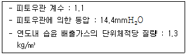
- 12.3 m/s
- 13.5 m/s
- 14.8 m/s
- 16.2 m/s
(정답률: 67%)
37. 환경대기 중 아황산가스의 농도를 측정하고자 산정량 수동법으로 측정하여 다음과 같은 결과를 얻었다. 이 때 아황산가스의 농도는?
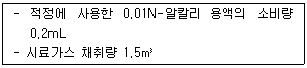
- 43
- 58
- 65
- 72
(정답률: 55%)
38. 굴뚝 배출가스 중 불소화합물 측정방법에 관한 설명으로 옳지 않은 것은?
- 용량법으로 분석 할 때 정량범위는 HF로서 0.6∼4.2mL이다.
- 시료중의 무기 불소화합물과 수분이 응축하는 것을 막기 위하여 시료 채취관 및 시료 채취관에서부터 흡수병까지의 사이를 140℃이상으로 가열해 준다.
- 흡광광도법으로 분석할 때 정량범위는 HF로서 0.9∼1,200ppm(0.8∼1,000mg/Sm3)이다.
- 시료 채취관은 배출가스중의 무기 불소화합물에 의하여 부식을 쉽게 유발하는 재질의 관, 예를들면 불소수지관, 구리관 등은 사용을 피한다.
(정답률: 50%)
39. Low volume air sampler법으로 환경대기 중에 부유하고 있는 입자상 물질을 포집하기 위한 장치의 기본구성 중 흡인펌프 조건으로 옳지 않은 것은?
- 운반이 용이할 것
- 유량이 큰 것
- 진공도가 높을 것
- 맥동이 있고 고르게 작동될 것
(정답률: 86%)
40. 환경대기 중 다환방향족탄화수소류(PAHs)의 기체크로마토그래피/질량분석법에서 사용되는 용어 정의 중 “추출과 분석 전에 각 시료, 공 시료, 매체시료에 더해지는 화학적으로 반응성이 없는 환경 시료 중에 없는 물질”을 의미하는 것은?
- 내부표준물질
- 대체표준물질
- 외부표준물질
- 냉매
(정답률: 82%)
3과목: 대기오염방지기술
41. 벤츄리 스크러버에 관한 설명으로 옳지 않은 것은?
- 가압수식 중에서 집진율이 매우 높아 광범위하게 사용된다.
- 액가스비는 일반적으로 먼지의 입경이 작고, 친수성이 아닐수록 작아진다.
- 먼지와 가스의 동시제거가 가능하고, 점착성 먼지제거가 용이하나 압력손실이 크다.
- 먼지부하 및 가스유동에 민감하고 대량의 세정액이 요구된다.
(정답률: 71%)
42. 다음 중 전기집진장치에서 전기집진이 가장 잘 이루어질 수 있는 먼지의 비저항 영역으로 가장 적합한 것은?
- 102 ∼ 104 Ω·cm
- 107 ∼ 1010 Ω·cm
- 1012 ∼ 1015Ω·cm
- 1014 ∼ 1018 Ω·cm
(정답률: 72%)
43. 다음은 액체연료의 연소방식에 관한 설명이다. ( )안에 알맞은 것은?
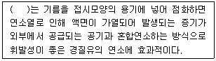
- 이류체 분무화식 연소
- 증기 분무식 연소
- 부분 예혼합 연소
- 포트식 연소
(정답률: 78%)
44. 황성분 1.86%가 함유된 중유 1kg을 연소하는 시설에서의 굴뚝 배출가스 중 황산화물의 농도는? (단, 표준상태를 기준하고, 중유 1kg당 굴뚝 배출가스량은 13Sm3, 황성분은 연소하여 전량 이산화황으로 산화된다.)
- 약 130 ppm
- 약 330 ppm
- 약 538 ppm
- 약 1000 ppm
(정답률: 44%)
45. 세정 집진장치에 관한 설명으로 옳지 않은 것은?
- 고온다습한 가스나 연소성 및 폭발성 가스의 처리가 가능하다.
- 점착성 및 조해성 먼지의 처리가 가능하다.
- 소수성 입자의 집진율은 낮다.
- 입자상 물질과 가스의 동시 제거는 불가능하나, 타 집진장치와 비교 시 장기운전이나 휴식 후의 운전재개시 장애는 거의 없다.
(정답률: 67%)
46. 흡수법에 관한 다음 설명 중 옳지 않은 것은?
- 흡수제는 휘발성이 커야한다.
- 충전탑은 액분산형 흡수장치에 해당한다.
- 재생가치가 있는 물질이나 흡수제의 재사용은 탈착이나 stripping을 통해 회수 또는 재생한다.
- 흡수제의 빙점은 낮고, 비점은 높아야 한다.
(정답률: 73%)
47. 어떤 0차반응에서 반응을 시작하고 반응물의 1/2이 반응하는데 40분이 걸렸다. 반응물의 90%가 반응하는데 걸리는 시간은?
- 약 66분
- 약 72분
- 약 133분
- 약 185분
(정답률: 73%)
48. 다음 중 연소조절에 의해 질소산화물 발생을 억제시키는 방법으로 가장 적합한 것은?
- 이온화연소법
- 고산소연소법
- 고온연소법
- 수증기분무
(정답률: 70%)
49. 물리적 흡착법과 화학적 흡착법의 일반적인 특성비교로 옳지 않은 것은?
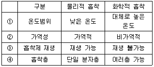
- ①
- ②
- ③
- ④
(정답률: 64%)
50. Butane 2 Sm3를 완전연소 할 때 필요한 이론 산소량은?
- 6.5 Sm3
- 13.0 Sm3
- 31.0 Sm3
- 61.9 Sm3
(정답률: 64%)
51. 탄소 85%, 수소 14%, 황 1% 조성을 가진 중유 2.5kg을 완전연소 시 필요한 이론 공기량은?
- 약 11.3 Sm3
- 약 22.6 Sm3
- 약 28.3 Sm3
- 약 32.4 Sm3
(정답률: 59%)
52. 먼지의 입경dp(μm)을 Rosin-Rammler 분포에 의해 체상분포 R(%)=100exp(-βdnp)으로 나타낸다. 이 먼지는 입경 35μm 이하가 전체의 약 몇 %를 차지하는가? (단, β = 0.063, n = 1)
- 11 %
- 21 %
- 79 %
- 89 %
(정답률: 61%)
53. 화학산화법으로 악취를 처리할 때 산화제로 적합하지 않은 것은?
- KMnO4
- ClO2
- O3
- CH3SHO2
(정답률: 63%)
54. Freundlich 등온흡착식으로 가장 적합한 것은? (단, X = 흡착된 용질량(제거가스 농도 : Ci-Co), M = 흡착제량, Co = 출구가스농도, Ci = 입구가스농도, K, n = 상수)
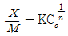
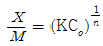
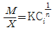
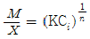
(정답률: 70%)
55. 물에 의한 염화수소 제거방법으로 가장 거리가 먼 것은?
- 염화수소는 용해열이 크고, 온도가 상승하면 염화수소 분압이 상승하므로 완전 제거를 목적으로 할 경우 충분한 냉각이 필요하다.
- 염화수소 농도가 높은 배기가스 처리시 충전탑이 사용되고, 농도가 낮을 때는 관외 냉각형을 주로 사용한다.
- 염산은 부식성이 있으므로 장치는 유리라이닝, 폴리에틸렌 등을 사용하고, 회전부를 갖는 접속장치는 재질, 보수 상의 문제가 있다.
- 충전탑, 스크러버를 사용할 때는 반드시 mist catcher를 설치하며 미스트 발산을 방지해야 한다.
(정답률: 56%)
56. A 집진장치의 압력손실은 500mmH2O, 처리가스량은 300m3/min, 송풍기의 효율은 70%일 때, 소요동력은?
- 35 kW
- 155 kW
- 525 kW
- 2100 kW
(정답률: 61%)
57. 다음 유해가스 처리를 위한 연소법에 관한 설명으로 가장 거리가 먼 것은?
- 직접연소법은 대체적으로 오염물의 발열량이 연소에 필요한 전체 열량의 약 50% 이상 일 때 경제적으로 타당하다.
- 가열연소법은 황화수소, 메르갑탄, 가솔린 등을 연소하는데 사용하며 비교적 농도가 낮은 오염물의 제거에 적합하다.
- 촉매연소법에서는 촉매의 노화를 방지하기 위해 촉매량을 증가시키고, 예열온도를 높힌다.
- 촉매연소법은 500∼800℃에서 조업하므로 직접연소법에 비해 질소산화물 발생이 쉽다.
(정답률: 61%)
58. 다음 기체를 각각 1Sm3씩 완전연소 하기 위하여 필요한 이론공기량(Sm3)이 많은 순서부터 차례로 나열된 것은? (단, 모두 표준상태 기준)
- C3H4 ＞ C2H6 ＞ C4H6 ＞ C3H6
- C4H6 ＞ C3H6 ＞ C3H4 ＞ C2H6
- C4H6 ＞ C3H4 ＞ C2H6 ＞ C3H6
- C3H6 ＞ C3H4 ＞ C4H6 ＞ C2H6
(정답률: 77%)
59. A배출시설의 배출량은 200000 Sm3/h, 이 배출가스에 함유된 질소산화물은 280ppm 이었다. 이 질소산화물을 암모니아에 의한 선택적 촉매 환원법(산소 공존없이)으로 처리할 경우 암모니아의 이론소요량(kg/h)은? (단, 배출가스 중 질소산화물은 모두 NO로 계산하고, 표준상태를 기준으로 한다.)
- 약 28
- 약 38
- 약 43
- 약 48
(정답률: 46%)
60. 송풍기의 크기와 유체의 밀도가 일정할 때 송풍기 회전속도를 2배로 증가시켰을 때 다음 설명 중 옳은 것은?
- 정압은 원래의 8배가 된다.
- 동력은 원래의 4배가 된다.
- 배출속도는 원래의 16배가 된다.
- 유량은 원래의 2배가 된다.
(정답률: 70%)
4과목: 대기환경 관계 법규
61. 대기환경보전법령상 배출허용기준 초과와 관련하여 개선 명령을 받지 아니한 사업자가 개선계획서를 제출하고 개선하는 경우 초과부과금 산정 시 산정(기준)항목에 해당하지 않는 것은?
- 배출허용기준초과 오염물질 배출량
- 지역별 부과계수
- 시간별 산정계수
- 오염물질 1킬로그램당 부과금액
(정답률: 56%)
62. 대기환경보전법령상 대기오염물질발생량의 합계가 연간 13톤인 사업장은 사업장 분류기준 중 몇 종 사업장에 해당하는가?
- 2종사업장
- 3종 사업장
- 4종 사업장
- 5종 사업장
(정답률: 91%)
63. 대기환경보전법상 정밀검사업무를 대행하는 교통안전공단 및 지정사업자는 정밀검사에 필요한 기술능력, 시설 및 장비를 갖추고 환경부령으로 정하는 준수사항을 지켜야 한다. 다음 중 이 준수사항을 지키지 아니한 자에 대한 과태료 부과기준으로 옳은 것은?
- 500만원 이하의 과태료를 부과한다.
- 300만원 이하의 과태료를 부과한다.
- 200만원 이하의 과태료를 부과한다.
- 100만원 이하의 과태료를 부과한다.
(정답률: 26%)
64. 대기환경보전법규상 대기오염물질 배출시설의 설치가 불가능한 지역에서 배출시설 설치허가 또는 신고를 하지 아니하고 배출시설을 설치한 경우의 1차 행정처분기준으로 옳은 것은?
- 조업정지
- 개선명령
- 폐쇄명령
- 경고
(정답률: 62%)
65. 대기환경보전법상 황사대책위원회 위원 구성기준으로 옳은 것은?
- 위원장 1명을 포함한 10명 이내의 위원
- 위원장 1명을 포함한 15명 이내의 위원
- 위원장 1명을 포함한 20명 이내의 위원
- 위원장 1명을 포함한 25명 이내의 위원
(정답률: 85%)
66. 대기환경보전법령상 매출액 산정 및 위반행위 정도에 따른 과징금의 부과기준에서 과징금 산정방법으로 옳은 것은?
- 총매출액 × 3/100 × 가중부과계수
- 총매출액 × 5/100 × 가중부과계수
- 총매출액 × 10/100 × 가중부과계수
- 총매출액 × 15/100 × 가중부과계수
(정답률: 52%)
67. 대기환경보전법규상 단계별 대기오염경보 발령기준이 되는 오존농도의 측정기준농도는?
- 1시간 평균농도
- 1시간내 최고농도
- 8시간 평균농도
- 8시간내 최고농도
(정답률: 60%)
68. 대기환경보전법규상 사업장에 대한 지도점검결과 사업장의 대기오염물질 발생량이 변경되어 해당 사업장의 구분(1종∼5종)을 변경하여야 하는 경우, 시ㆍ도지사는 그 사실을 사업자에게 통보해야 하는데, 통보받은 해당 사업자는 통보일로부터 며칠이내에 변경신고를 하여야 하는가?
- 5일 이내
- 7일 이내
- 10일 이내
- 30일 이내
(정답률: 63%)
69. 대기환경보전법령상 배출허용기준초과와 관련하여 배출시설 및 방지시설의 개선명령을 수행하기 위한 최대 개선기간은? (단, 개선기간 연장포함)
- 1년 이내
- 1년 6월 이내
- 2년 이내
- 3년 이내
(정답률: 67%)
70. 대기환경보전법규상 대기오염물질 배출시설 중 폐수ㆍ폐기물 소각시설기준은 시간당 소각능력이 얼마 이상인가?
- 5kg 이상
- 10kg 이상
- 20kg 이상
- 25kg 이상
(정답률: 67%)
71. 다음은 대기환경보전법령상 굴뚝 자동측정기기의 부착 시기 및 부착 유예에 관한 기준이다. ( )안에 알맞은 것은?
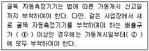
- ① 5개, ② 1년 이내
- ① 5개, ② 6개월 이내
- ① 10개, ② 1년 이내
- ① 10개, ② 6개월 이내
(정답률: 56%)
72. 대기환경보전법령상 굴뚝자동측정기기의 부착을 면제할 수 있는 경우에 해당하지 않는 것은?
- 발전시설 중 연소가스 또는 화염이 원료 또는 제품과 직접 접촉하지 아니하는 시설로서 청정연료를 사용하는 경우
- 보일러로서 사용연료를 6개월 이내에 청정연료로 변경할 계획이 있는 경우
- 연간 가동일수가 30일 미만인 배출시설인 경우
- 부착대상시설이 된 날부터 6개월 이내에 배출시설을 폐쇄할 계획이 있는 경우
(정답률: 48%)
73. 대기환경보전법규상 대기오염물질로 규정되어 있지 않은 항목은?
- 이산화탄소
- 일산화탄소
- 사염화탄소
- 이황화탄소
(정답률: 60%)
74. 대기환경보전법규상 고체연료 사용시설 설치기준 중 석탄 사용시설 설치기준으로 옳지 않은 것은?
- 배출시설의 굴뚝높이는 100m이상으로 하되 굴뚝 상부안지름, 배출가스 온도 및 속도 등을 고려한 유효굴뚝 높이가 440m 이상인 경우에는 굴뚝높이를 50m이상 100m미만으로 할 수 있다. (이 경우 유효굴뚝 높이 및 굴뚝높이 산정방법 등에 관하여는 환경부 장관이 정하여 고시한다.)
- 석탄의 수송은 밀폐 이송시설 또는 밀폐통을 이용하여야 한다.
- 석탄저장은 옥내저장시설(밀폐형 저장시설 포함)또는 지하저장시설에 저장하여야 하며, 석탄연소재는 밀폐통을 이용하여 운반하여야 한다.
- 굴뚝에서 배출되는 아황산가스(SO2), 질소산화물(NOx), 먼지 등의 농도를 확인할 수 있는 기기를 설치하여야 한다.
(정답률: 74%)
75. 대기환경보전법령상 기본부과금의 부과대상이 되는 오염물질은?
- 암모니아
- 황화수소
- 황산화물
- 불소화합물
(정답률: 57%)
76. 다음은 대기환경보전법규상 자동차 연료 검사기관의 기술능력 기준이다. ( )안에 알맞은 것은?
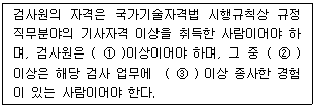
- ① 3명, ② 1명, ③ 3년
- ① 3명, ② 2명, ③ 5년
- ① 4명, ② 2명, ③ 3년
- ① 4명, ② 2명, ③ 5년
(정답률: 76%)
77. 대기환경보전법에서 사용하는 용어의 뜻으로 옳지 않은 것은?
- “첨가제'란 자동차의 성능을 향상시키거나 배출가스를 줄이기 위하여 자동차의 연료에 첨가하는 탄소와 수소만으로 구성된 화학물질을 말한다.
- “휘발성유기화합물”이란 탄화수소류 중 석유화학제품, 유기용제, 그 밖의 물질로서 환경부장관이 관계 중앙행정기관의 장과 협의하여 고시하는 것을 말한다.
- “매연”이란 연소할 때에 생기는 유리탄소가 주가 되는 미새한 입자상 물질을 말한다.
- “저공해 엔진”이란 자동차에서 배출되는 대기오염물질을 줄이기 위한 엔진(엔진 개조시 사용하는 부품을 포함한다)으로서 환경부령이 정하는 배출허용기준에 맞는 엔진을 말한다.
(정답률: 58%)
78. 대기환경보전법규상 운행차 배출허용기준 중 일반기준으로 옳지 않은 것은?
- 휘발유와 가스를 같이 사용하는 자동차의 배출가스 측정 및 배출허용기준은 가스의 기준을 적용한다.
- 알코올만 사용하는 자동차는 탄화수소의 기준을 적용한다.
- 휘발유사용 자동차는 휘발유ㆍ알코올 및 가스(천연가스를 포함한다)를 섞어서 사용하는 자동차를 포함한다.
- 건설기계 중 덤프트럭, 콘크리트믹서트럭, 콘크리트펌프트럭에 대한 배출허용기준은 화물자동차 기준을 적용한다.
(정답률: 69%)
79. 대기환경보전법규상 대기오염도 검사기관이 아닌 것은?
- 환경보전협회
- 수도권대기환경청
- 한국환경공단
- 대구광역시 보건환경연구원
(정답률: 67%)
80. 다음은 대기환경보전법상 등록의 취소에 관한 설명이다. ( )안에 공통으로 들어갈 알맞은 기간은?
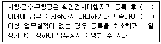
- 6개월
- 1년
- 1년 6개월
- 2년
(정답률: 59%)